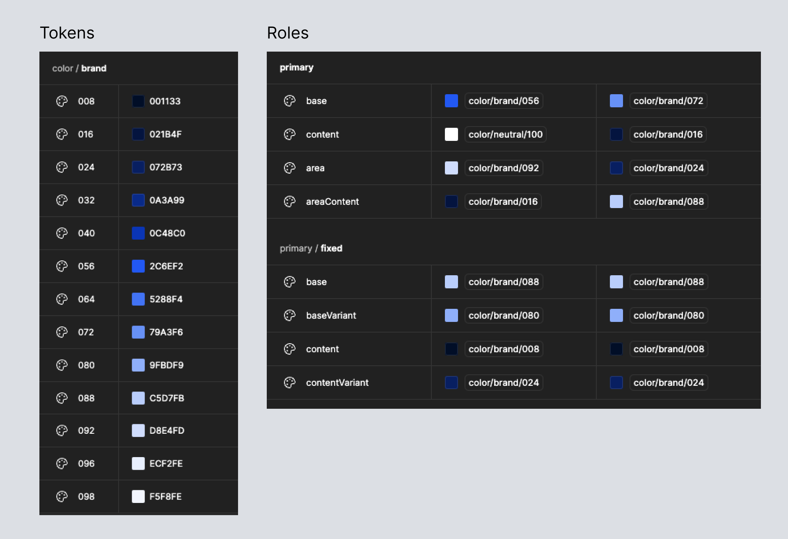
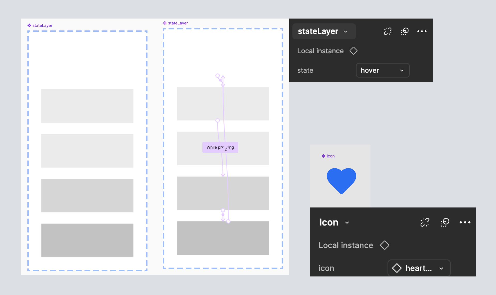
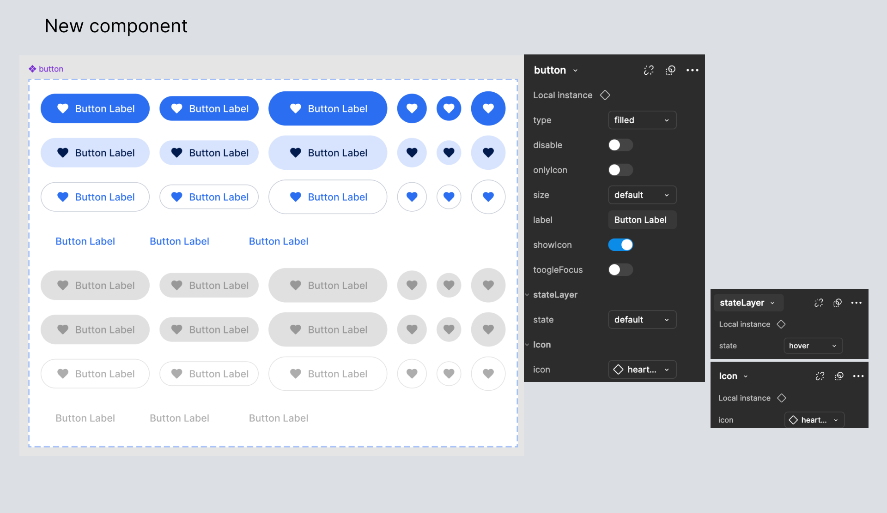
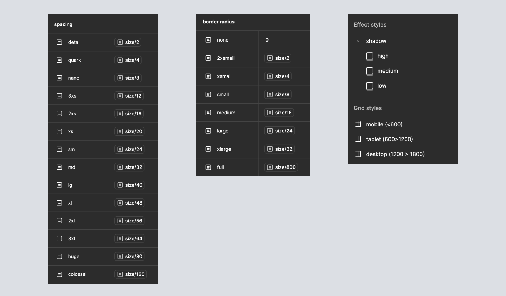
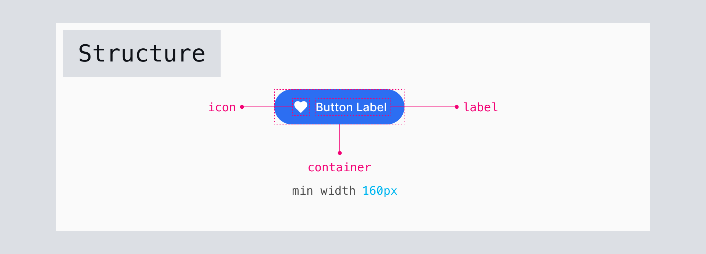
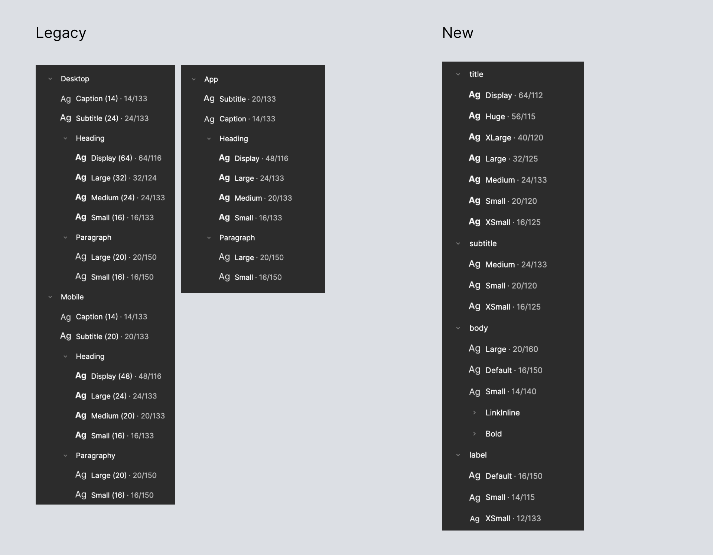
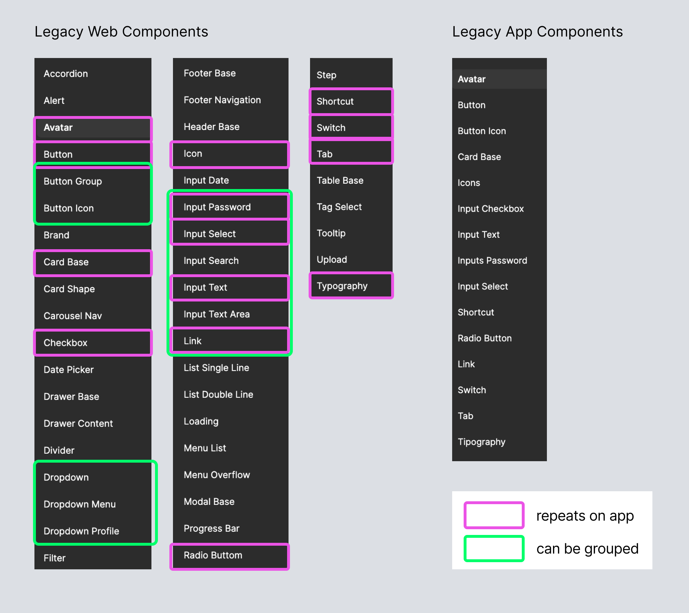
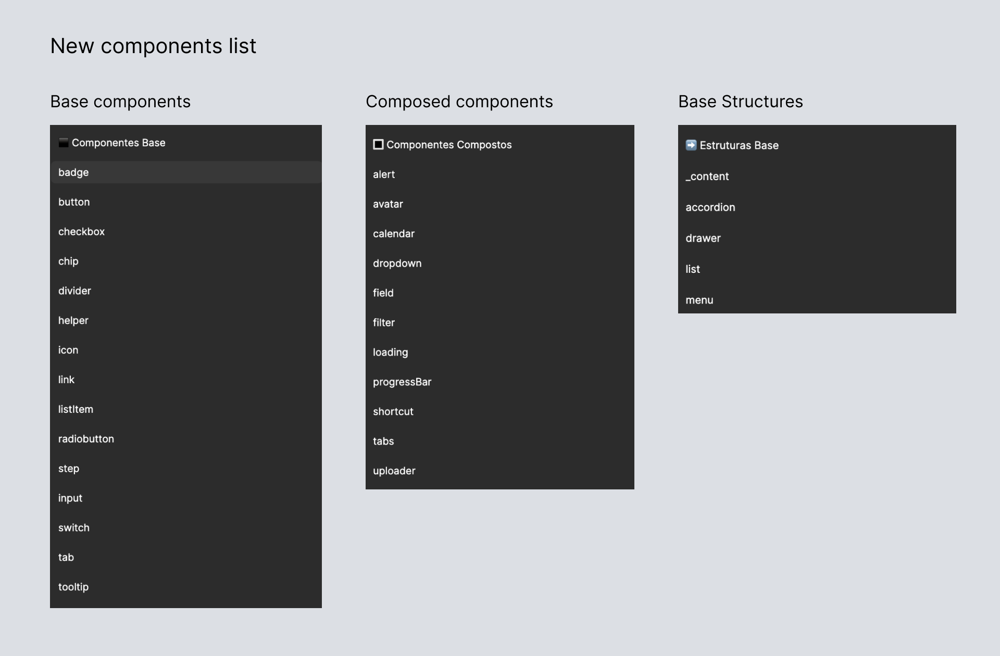

Design System Tempo
Project Background
The following project is the result of refactoring a design system delivered by a former supplier of the institution. The previous project was incomplete and was resumed later by a dedicated team.
Some points found in the delivered version (also referred to as legacy version):
- Components focused on a specific product, resulting in a lack of options for other products
- Components designed in a macro manner, hindering scalability within the tool
- Components designed in an outdated manner in Figma
- Redundant components that are not reflected in the repository
- Outdated component documentation and inconsistent with other sources (Zeroheight, Storybook)
- Components built incorrectly and sometimes even unfinished, causing issues during application
- Design System APP version not replicated in development
- Lack of a dedicated team led to various forks, reducing the idea of community and collaborative development
- Technologies not in line with the products' needs, resulting in many "shortcuts" and parallel solutions
- Lack of changelog, resulting in unawareness of changes and long searches in case of bugs
- Discrepancy in behavior, states, and variations of components compared to Figma
- Components created by teams that should be in the local fork, within the Core repository
A New Design System
After analyzing the situation of the legacy version, it was decided to create a version 2.0 of what was delivered. We took the opportunity to review, recreate, and adjust the design foundations and how to apply the design system for both designers and developers.
The focal points of the Design System would be: Accessibility, Community, and Scalability.
Colors
An old desire was to have a dark theme for the Design System. For this, we created the necessary color tokens and gave them a "role." Each role has an associated color token for the light version and another for the dark version, within the Figma variables feature.
All colors roles were tested to have a minimum AA contrast, according to WCAG rules, aiding in the product's accessibility.
Tipography
On the legacy project the tipogaphy are divide by Web ( with two divisions: desktop and mobile) and App, resulting in multiples redudancies on tipography styles and, at same time, missing some options.
I remake and add some styles to ensure a good range of options to use on text hierarchy.
Other Foundations
Additionally, spacing tokens, typography style, and other tokens used in component construction (border radius, internal spacings, etc.) were created.
Component Redesign
First of all, I need to know what components we have and how organize them. The legacy projetc use two libraries (Web and App) with some repeated components and multiple components that can be a single one.
I want to a new division that makes more sense, once the two list will be merged on a single one (for both Web and App components). I separated the components in Base Components (simple components that can be used alone and to build another components), Composed Components (more complex components that have multiple interactions and can use the base components) and Base Structures (complex that can fit diverse types of content - the idea here are to make a lot of content placeholders that will make the number of detach on Figma fall). The new list below:

Some components were made only to support the construction of larger components. An example is the stateLayer, which already contains hover, pressed, and dragged interactions, maintaining visual coherence across various components and advancing in the prototyping phase.

Some functional components from the legacy version were also redesigned with new variables, providing greater versatility. Simultaneously, separate components were merged to make development easier and more cohesive.
The image below shows two old/legacy components, that are badly constructed.

We remake this component adding two new button types and the merging the buttonIcon, previously a separate component, adding more options to the design team ont their projects.


The components were designed to be used in both web and app scenarios. The idea is to maintain cohesive interactions and experiences across various platforms, always taking into account the unique characteristics of each support.
Some components created, already with their dark theme version:
Handoff
To make the development easier I created a simple file with all components structures (naming every part to help comunication between designers and developers), states, measures and modifiers. A example below for button structure:
Documentation
I choose to use Zeroheight as documentation tool for designers while using Storybook on development side. This part are in development at moment.
Development
When it comes to design systems, it's necessary to also consider development, as this is where the product will actually be used. I like to know a little of development to ensure the quality and viability on my designs and decisions.
We changed the technology, creating components with composed patterns, allowing them to be altered in all ways, covering teams' urgent needs without detracting from the design fundamentals. This way, any changes can go directly to the community folder without affecting or locking products under construction.
New Repository Architecture
The legacy architecture, linked to the lack of a dedicated team, led to numerous copies of the Core components of the Design System, going against the idea of a collaborative and community-driven project.
The new proposal includes two folders: one for the core (with components created by the dedicated team and which can only be updated by them) and one for the community. In the community folder, if necessary, the squad team will make changes to an existing component for a specific product need, and this modified component will be available to be copied by another squad that needs the same solution. This keeps all squads aware of components adapted or created by other teams and facilitates the dedicated Design System team in finding improvements to be promoted to the Core library.
Next Steps
An ongoing project
Having addressed the major issues of the legacy version, the focus now is to grow and further enhance the documentation of this version.
We will also consider the workflows for adding new components, gathering new icons and illustrations, a sound library, a library of components focused on large screens (televisions and similar), and the optimization and automation of commits, pull requests, and changelogs for the teams.
Thanks!